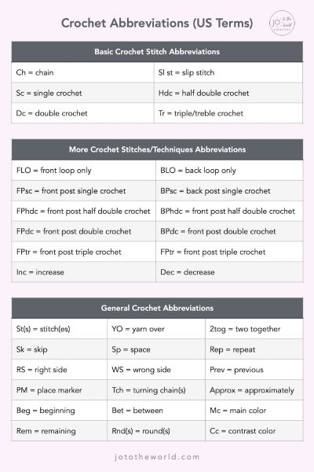

GOOD WEBSITES
There's lots of websites on the internet. Are all of them good? No. Viruses, trackers, etc are now a common thing. You can't necessarily avoid them,
but you can at least try to be careful. Don't click any ads, ignore AI, and look for websites that are well known and generally look
professional (ex. a website you've never heard of called FreeCoolCrochetPatterns1000001.com, more like FreeCoolDataStealers1000001.com!!!).
LANGUAGE AND ABBREVIATIONS
At this point, you should have your pattern and chosen supplies. Now it's time to read and follow this pattern. Usually there's an answer key at
the start of each pattern, but here's a chart to help you memorize. Most patterns are written in the US style (slightly different from the UK style),
but most patterns specify which one they use at the start.
